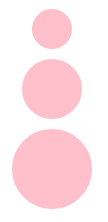

Data Binding is how D3 automatically genereates SVG/DOM elements. D3 binds data with DOM elements and will
update your page based on changing data. This is possible by using D3's Selection module.
The following example shows how D3 can create circle SVG objects automatically based on the array of circle objects stored in the variable data. The functions
that are used in this example are the following;
.select() - as stated by the d3 wiki page "you can select by tag ("div"), class (".awesome"), unique identifier ("#foo"), attribute ("[color=red]"),
or containment ("parent child"). Selectors can also be intersected (".this.that" for logical AND) or unioned (".this, .that" for logical OR)",
.selectAll()
.data()
.enter()
.append()
.exit()
If you run the following code, you will see three pink circles. The data was generated by creating an array of circle objects. Note that anonymous functions are used in
order to access the individual objects in the array.

Now we will add another circle object "new circle(100,270,50)" to the data array. The data is the only code that has been modified, so with the same code, another circle is generated.